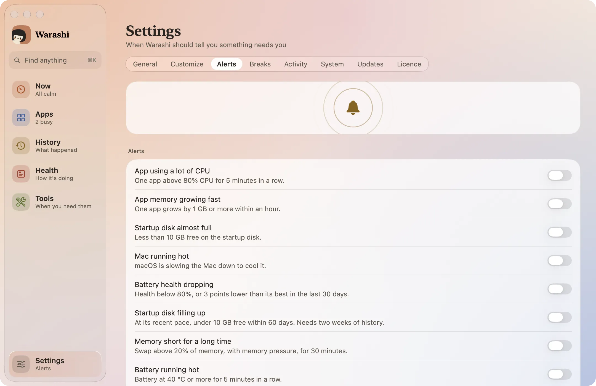
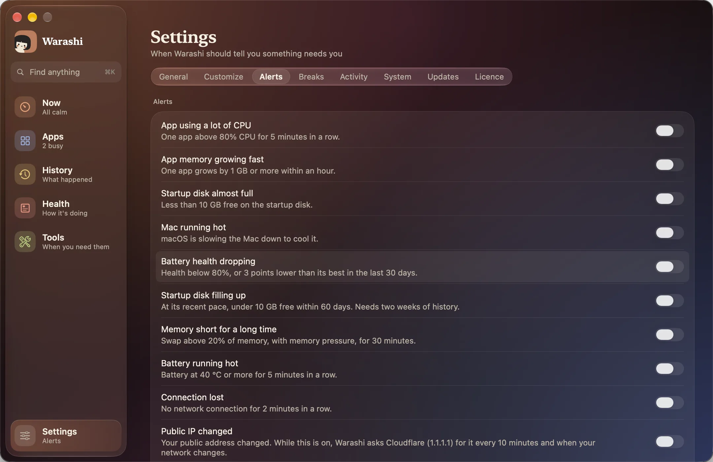
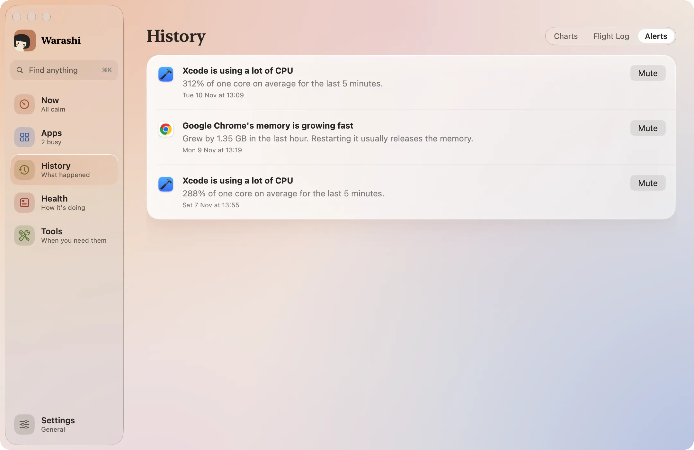
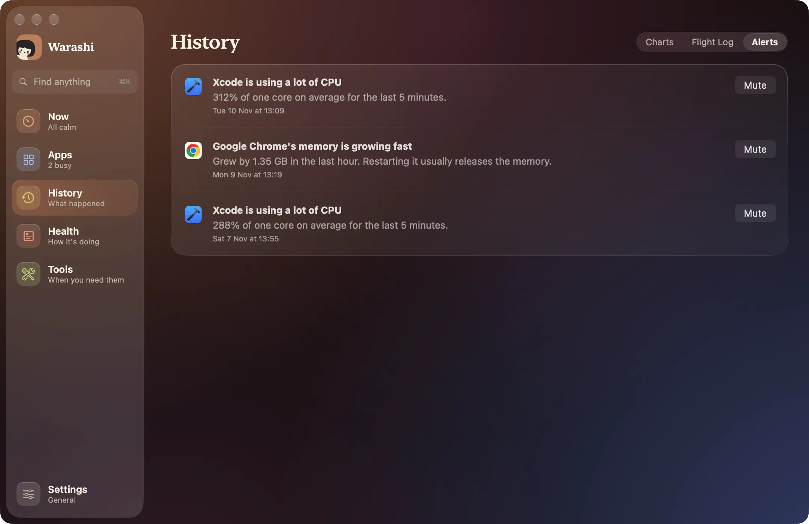

Alerts tell you when something needs you: once per problem, not every minute it lasts.
- Open Settings › Alerts
Press ⌘, and choose Alerts.


- Turn on the alerts you want
Each switch is one rule (see the table below). They're all off until you turn them on.
- Allow notifications
The first time, macOS asks whether Warashi may send notifications. Click Allow. If you said no, alerts still appear in Warashi and the notch, and Settings offers Open Notification Settings.
- Read and mute alerts
Choose History, then the Alerts tab, for the last 30 days with the evidence. Click Mute to stop an alert for that particular app.


The alerts
| Alert | When |
|---|---|
| App using a lot of CPU | One app above 80% CPU for 5 minutes in a row. |
| App memory growing fast | One app grows by 1 GB or more within an hour. |
| Startup disk almost full | Less than 10 GB free on the startup disk. |
| Startup disk filling up | At its recent pace, under 10 GB free within 60 days. Needs two weeks of history. |
| Memory short for a long time | Swap above 20% of memory, with memory pressure, for 30 minutes. |
| Mac running hot | macOS is slowing the Mac down to cool it. |
| Battery running hot | The battery at 40 °C or more for 5 minutes in a row. |
| Battery health dropping | Health below 80%, or 3 points lower than its best in the last 30 days. |
| Connection lost | No network for 2 minutes in a row. |
| Public IP changed | Your public IP address changed, for example because a VPN dropped. |
| Mac struggling | The processor busy, memory short or the Mac slowing to cool off, for 2 minutes in a row. Says why, like the Flight Log. |
| Backup overdue | Time Machine is set up but hasn't backed up for a week. Checked once a day; seeing the date needs Full Disk Access. |
| macOS update waiting | A macOS update has been waiting for a week. Checked once a day. |
The Public IP alert
Only while this alert is on, Warashi asks Cloudflare's 1.1.1.1 for your public IPv4 address every 10 minutes and shortly after your network changes. The request carries nothing about you or your Mac. If the address changes, you're told the new one, with a reminder to check your VPN. Turn the alert off and Warashi stops asking and forgets the address.
If something's not right
- No notifications: check System Settings › Notifications › Warashi. Warashi shows a note in Settings › Alerts when they're turned off.
More in Troubleshooting, or email adam@warashi.app.